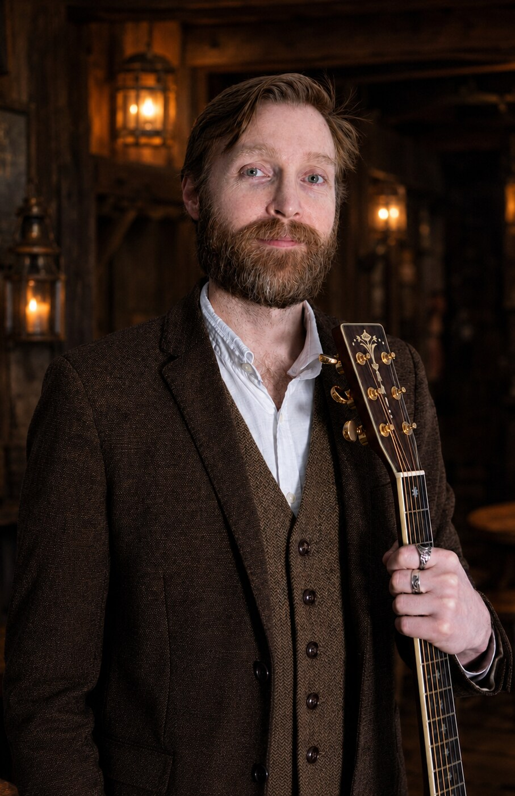

I’m a singer and guitarist with loads of experience performing upbeat tunes that keep the atmosphere lively!
Performing classic rock, pop and tavern classics including fun sea shanties, I move between acoustic guitar and full backing tracks with electric guitar for a bigger, more energetic sound.
I’m also available as a duet with R&B singer and guitarist Daniel Ross for even more variety!
My jazz set is available on request too and works well for canapés and cocktail hours.
Bookings range from a single set to a full 3- or 4-set show. I provide my own PA and equipment and suit pubs, clubs, wineries, breweries, weddings and private functions.
A cross-section of the current show and The Modern Bard: rock, pop, soul, acoustic tavern material, fantasy and Celtic repertoire, with jazz by request. Acoustic clips feature Robert; backing-track previews demonstrate the full-production arrangements used live.
Selected track
Rock · arrangement preview
Don’t Stop Believin’
Journey
The repertoire
Choose a songbook.
Explore the main live show, the duo additions and the separately booked Modern Bard repertoire.
Main show · full-production arrangements
Rock, Pop & Soul
Twenty-seven familiar songs with Robert on live lead vocal and selected electric-guitar parts.
All Along the WatchtowerJimi Hendrix / Bob Dylan
Are You Gonna Be My GirlJet
Are You Gonna Go My WayLenny Kravitz
Bohemian RhapsodyQueen
Don’t Stop Believin’Journey
Don’t Stop Me NowQueen
Down UnderMen at Work
Eye of the TigerSurvivor
Free Fallin’Tom Petty
Higher GroundStevie Wonder
I’m Still StandingElton John
It’s My LifeBon Jovi
Kryptonite3 Doors Down
Learn to FlyFoo Fighters
Livin’ on a PrayerBon Jovi
MoondanceVan Morrison
Piano ManBilly Joel
SmoothSantana / Rob Thomas
Stayin’ AliveBee Gees
Sultans of SwingDire Straits
Summer of ’69Bryan Adams
SuperstitionStevie Wonder
The Show Must Go OnQueen
This LoveMaroon 5
Thnks fr th MmrsFall Out Boy
To Be With YouMr. Big
You Give Love a Bad NameBon Jovi
Main show · voice & acoustic guitar
Acoustic, Folk & Tavern
Twenty songs performed with voice and acoustic guitar, including upbeat rock, folk, tavern favourites and sea shanties.
A Drop of Nelson’s BloodTraditional
Barrett’s PrivateersStan Rogers
Drunken SailorTraditional
Here’s a Health to the CompanyTraditional
My Mother Told MeTraditional / Vikings
Ode to Henry
PushMatchbox Twenty
Randy Dandy OhTraditional
Roll, Boys, RollTraditional
SantianaTraditional
Sera Was NeverDragon Age: Inquisition
Spanish LadiesTraditional
Take Me Home, Country RoadsJohn Denver
The Dornishman’s WifeGame of Thrones
The Way You Make Me FeelMichael Jackson
Tip of My TongueDiesel
Toss a Coin to Your WitcherThe Witcher
WellermanTraditional
Where Am I to Go, M’JohnniesTraditional
ZombieThe Cranberries
Available on request
Jazz & Swing
Nineteen standards for cocktail hour, canapés, lounges and a polished change of atmosphere.
A Fine Romance
All of Me
Almost Like Being in Love
Cheek to Cheek
Come Fly With Me
Fly Me to the Moon
I Get a Kick Out of You
I’ve Got the World on a String
I’ve Got You Under My Skin
It’s Only a Paper Moon
Love Is Here to Stay
Nice and Easy
Nice Work If You Can Get It
Something’s Gotta Give
The Way You Look Tonight
They All Laughed
They Can’t Take That Away from Me
Top Hat, White Tie and Tails
You Make Me Feel So Young
Robert Rosina & Daniel Ross
R&B, Soul & Pop Additions
Twenty further songs available with the two-singer, two-guitarist duo.
In the Midnight HourWilson Pickett
How Deep Is Your LoveBee Gees
Stand by MeBen E. King
She Will Be LovedMaroon 5
It’s the Same Old SongFour Tops
Beat ItMichael Jackson
Because of YouNe-Yo
HappyPharrell Williams
You Make Me Wanna...Usher
I Wanna Dance with SomebodyWhitney Houston
Signed, Sealed, DeliveredStevie Wonder
I Heard It Through the GrapevineMarvin Gaye
TreasureBruno Mars
ValerieAmy Winehouse / Mark Ronson
CrazyGnarls Barkley
Rock Your BodyJustin Timberlake
This Is How We Do ItMontell Jordan
Moves Like JaggerMaroon 5
Hey Ya!Outkast
RehabAmy Winehouse
Separately booked specialist show
The Modern Bard
The Robert Rosina live show remains the main booking on this page. The Modern Bard is a distinct acoustic show created for historic, themed and atmospheric venues.
Where it fits
Some acoustic songs appear in both repertoires. The complete Bard presentation, three-act sequence and Celtic material are booked separately as The Modern Bard.
Two singers. Two guitarists. More harmony, musicianship and variety, with twenty additional R&B, soul and pop songs.
A standard set runs approximately 50 minutes, with scheduled breaks between sets.

Robert Rosina · The Modern Bard
Specialist acoustic offering
The Modern Bard
Live music that becomes part of the atmosphere.
The Modern Bard stands where folk song, history and imagined worlds meet. Robert brings together fantasy ballads, songs of the sea, tavern choruses, Celtic folk and fingerstyle instrumentals in an acoustic performance shaped for immersive rooms.
Created for historic pubs, breweries, distilleries, themed restaurants, heritage venues, wineries and atmospheric private events.
You have already built the world. The Modern Bard provides the live music that belongs inside it.
The mixed experience is the main booking. Individual themed sets are available for shorter programs and venue-specific events.
01 · Main booking
The Modern Bard Experience
3 × 50-minute mixed sets
A Wanderer’s Tale unfolds through three acts: The Wanderer, The Voyage and The Return, mixing fantasy ballads, folk songs, sea shanties, tavern songs and instrumentals.
02 · Extended booking
Full Modern Bard Experience
4 × 50-minute mixed sets
The broadest version of the act, drawing more deeply from the fantasy, folk, maritime and instrumental repertoire.
03 · Feature program
Themed Set
45–50 minutes
Choose Songs of the Sea, Tavern Songs & Singalongs, Celtic & Folk, Songs of Middle-earth, or one of Mixed Sets 1–4.
Selected themed programs can also incorporate short readings or poetry where they serve the venue and occasion.
The songbooks
A Wanderer’s Tale.
The complete three-act program appears in performance order, followed by the extras, Celtic songs and Celtic instrumentals available for broader or tailored bookings.
01Act I · The Wanderer19 selections
Finn MacCool’s ReelInstrumental
Hobbit Drinking Songs
Ode to Henry
The Dornishman’s Wife
Ragnar the Red
Age of Oppression
Fall of the Magister
Sera Was Never
Scout Lace Harding
O Willow Waly
Song of Durin
Hama’s Song
Odyssey
Daughter of the Sea
This Wandering Day
Santiana
The Song of Beren and Lúthien
Sheebeg an SheemorInstrumental · alternate
Si Bheg Si MhorInstrumental
02Act II · The Voyage20 selections
Morgan MaganInstrumental
Roll, Boys, Roll
Wellerman
A Drop of Nelson’s Blood
A Siren’s Call
Monstrum’s Lullaby
Lament of Orpheus
Oh, Grey Warden
Here’s a Health to the Company
Gollum’s Song
Randy Dandy Oh
Drunken Sailor
Juice of the Vine
Beauty of Dawn
Three Hearts as One
The Star-Eyed Bride of Alinor
Spanish Ladies
The Wolven Storm (Priscilla’s Song Version)
The Man Who Can’t Forget
Flamorgan AirInstrumental
03Act III · The Return18 selections
Merrily Kissed the Quaker / CunlaInstrumental
The Rocks of BraeInstrumental · alternate
Leave Her, Johnny
Lament for Boromir
Fear Not This Night
Hands of Gold
Nightsong – The Power
Inquisitor
Doom – Fire & Blood
The Dawn Will Come
The Wolven Storm
The Parting Glass
Northwest Passage
Where Am I to Go, M’Johnnies
For the Dancing and the Dreaming
Toss a Coin to Your Witcher
Sergeant Early’s DreamInstrumental · alternate
The TwinsInstrumental
04Appendix · Extras & Swaps13 selections
The Blarney PilgrimInstrumental
Sing of Manetheren
My Mother Told Me
Barrett’s Privateers
Song of Balduran
The Last Goodbye
Song of the Lonely Mountain
I See Fire
Mingulay Boat Song
Once We Were
Lullaby of the Giants
Nightingale’s Eyes
The Song of the White Wolf
05Celtic & Folk18 songs
BirniebouzleTraditional
Black Velvet BandTraditional
CarrickfergusTraditional
Danny BoyTraditional
Fields of AthenryPete St. John
Loch LomondTraditional
Long Black VeilDanny Dill / Marijohn Wilkin
Mingulay Boat SongTraditional
Molly MaloneTraditional
Ned of the HillTraditional
Raglan RoadPatrick Kavanagh
Red, Red RoseRobert Burns
Scarborough FairTraditional
Song of Lia FáilCeltic folk
Star of the County DownTraditional
The Parting GlassTraditional
Wild Mountain ThymeTraditional
Ye Banks and BraesRobert Burns
06Celtic Instrumentals14 pieces
A Honeyed Lip
Archibald McDonald of Keppoch
Broken Pledge
Captain O’Kane
Carolan’s Cottage
Carolan’s Welcome
Glenlivet
Morgan Magan
Scottish Medley
Slane
The Blarney Pilgrim
The Butterfly
The Monaghan Jig
The TwinsJames Earp / Pat Kirtley
Special requests can be prepared with advance notice.
Practical details
Easy to book. Ready on arrival.
Robert brings the performance system and works with the venue in advance so the music fits the room.
Best suited to
Pubs, clubs, breweries, wineries, weddings and private functions.
Coverage
Based across Sydney and the Hunter Valley, with travel available throughout NSW.
Equipment
Professional PA, instruments and musical equipment supplied and operated by Robert.
Space & power
Allow approximately 2 × 2 metres and access to a standard power outlet.
Outdoor bookings
Adequate shelter from sun, rain and weather is required for the performer and equipment.
Insurance
Public liability insured up to $2 million. Venue permits, inductions and compliance requirements can be arranged in advance.